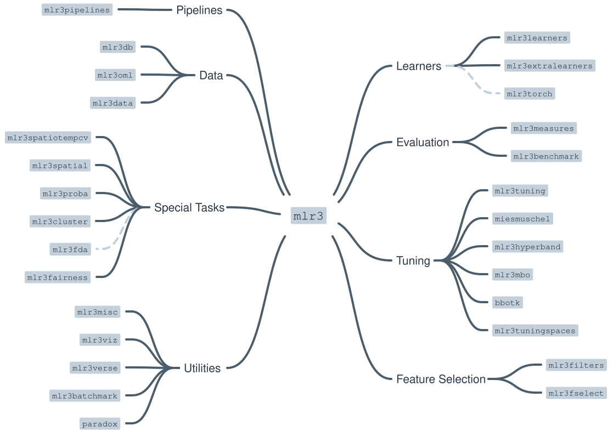

mlr3 不是一个孤立的项目，而是一套以 mlr3 为核心、由数十个扩展包共同组成的模块化生态（社区称之为 mlr3verse）。本书覆盖的核心包位于图的中心，外围包按功能分工协作——例如 mlr3learners 提供学习器实现，mlr3tuning 负责调优，mlr3pipelines 支撑管道与预处理，mlr3cluster 与 mlr3proba 把适用范围扩展到聚类、密度估计等非常规任务。
这种「核心 + 插件」的架构带来两个直接好处：其一，核心包保持稳定，学习器、评估、调优等能力可以独立升级而不破坏兼容性；其二，你可以只安装当前研究需要的部分，不必背上一整棵依赖树。

| 功能域 | 作用 | 代表包 |
|---|---|---|
| 核心 | 定义 Task、Learner、Resampling、Measure 等抽象接口，所有扩展包围绕其工作 | mlr3 |
| Learners | 具体学习器实现（分类、回归、聚类等） | mlr3learners、mlr3extralearners、mlr3torch |
| Evaluation | 基准测试框架与评价指标 | mlr3measures、mlr3benchmark |
| Tuning | 超参数优化，包括黑箱优化与并行化调优 | mlr3tuning、mlr3mbo、bbotk、paradox |
| Feature Selection | 特征筛选方法（过滤式、包装式等） | mlr3filters、mlr3fselect |
| Pipelines | 顺序与非顺序管道、预处理组合 | mlr3pipelines |
| Data | 数据集获取与缓存 | mlr3data、mlr3oml |
| Special Tasks | 非常规任务：密度估计、聚类、时空数据、公平性、概率预测等 | mlr3cluster、mlr3proba、mlr3spatial、mlr3spatiotempcv、mlr3fairness、mlr3fda |
| Utilities | 可视化、并行批处理、杂项工具 | mlr3viz、mlr3batchmark、mlr3misc |
背景与解释（译者注）：为什么 mlr3 要设计成「核心 + 插件」而不是一个大而全的包？
早期的机器学习 R 包（如 caret）倾向于把算法、数据处理、调参都塞进同一个包，结果是版本之间互相牵制——升级一个算法可能破坏既有流程。mlr3 团队选择了 R 社区的 S3/S4 风格：核心包 mlr3 只定义「契约」（比如一个学习器必须能 $train()、$predict()、$score()），具体实现交给扩展包。
这样做的好处在研究场景中尤其明显：当你需要替换某个学习器、或引入全新的任务类型（如密度估计）时，只需安装对应扩展包，既有代码无需改动。代价则是需要理解各包的职责边界——这也是本书第 1 章专门用一节篇幅讲解 mlr3verse 的原因。